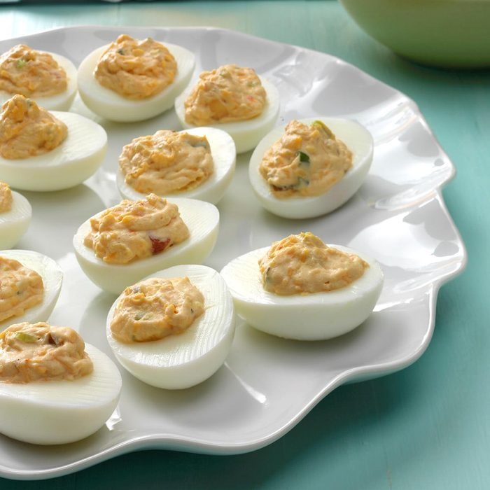

Buffalo Chicken Nacho Bowl

Description
This recipe was given to me by a friend several years ago. These have a very unique flavor and are quite addicting.
Garnish with chopped ripe olives or cilantro, and serve with your favorite salsa.
Ingredients
- 6 eggs
- ¼ cup mayonnaise
- 2 tablespoons canned chopped green chiles
- 1 tablespoon chopped pitted ripe olives
- ½ teaspoon chili powder
- ⅛ teaspoon ground cayenne pepper
Directions
- Place the eggs into a saucepan in a single layer and fill with water to cover the eggs by 1 inch. Cover the
saucepan and bring the water to a boil over high heat. Remove from the heat and let the eggs stand in the hot
water for 15 minutes. Drain. Cool the eggs under cold running water. Peel once cold. Halve the eggs lengthwise and
scoop the yolks into a bowl. Mash the yolks with a fork.
- Stir the mayonnaise, chopped green chiles, olives, chili powder, and cayenne pepper until well combined; spoon
into the egg white halves.